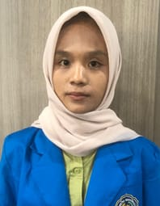

Foto Profil

📝
Tentang Saya
Halo! Perkenalkan nama saya Nazua Safira Nasution. Saya lahir di
Dolok Maraja pada tanggal 09 Febuari 2006. Saat ini saya Mahasiswa
jurusan Sistem Informasi di Universitas Muhammadiyah Sumatera Utara
di Medan.
Saya memiliki ketertarikan yang besar dalam bidang teknologi,
terutama web development dan Pengembangan Sistem Informasi.
Saya selalu bersemangat untuk belajar hal-hal baru dan mengembangkan
keterampilan saya.
📋
Data Pribadi
- Nama Lengkap: Nazua Safira Nasution
- Tempat, Tanggal Lahir: Dolok Maraja, 09 Febuari 2006
- Alamat: DOLOK MARAJA
- Status: Belum Menikah
- Agama: Islam
- Kewarganegaraan: Indonesia
🎨
Hobi & Minat
- Bermain Game
- Membaca buku
- Berenang dan jogging
- Menonton film dan series
🎓
Riwayat Pendidikan
-
MIS YMI Sinaksak (2018)
Lulus dengan nilai rata-rata 8.5
-
MTSN Pematang Siantar 57 (2021)
Lulus dengan nilai rata-rata 8.7
-
SMKN 3 Pematang Siantar (2024)
Jurusan Manajemen Perkantoran, lulus dengan nilai rata-rata 9.0
-
Universitas Muhammadiyah Sumatera Utara (2024 - Sekarang)
💻
Keterampilan
- Programming Languages: Python
- Database: MySQL
- Tools: Git, VS Code, Linux
- Languages: Indonesia (Native), English (Advanced)
💼
Pengalaman Kerja
-
Pernah PKL di Telkom Akses siantar
⏰ Jadwal Harian
| Waktu |
Kegiatan |
| 06:30 |
Bangun, Belajar, |
| 08:30 |
Kuliah |
| 17:00 |
Olahraga / Istirahat |
| 21:00 |
Istirahat |
📞
Kontak Saya